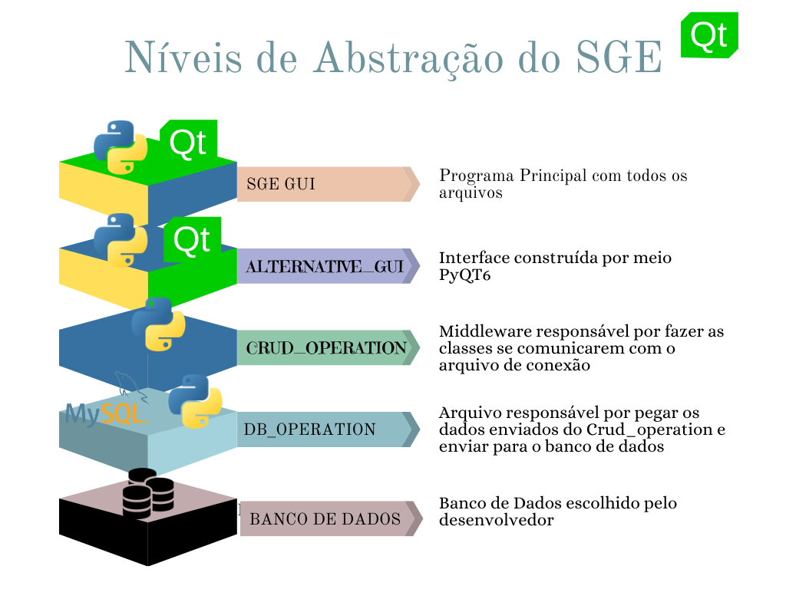
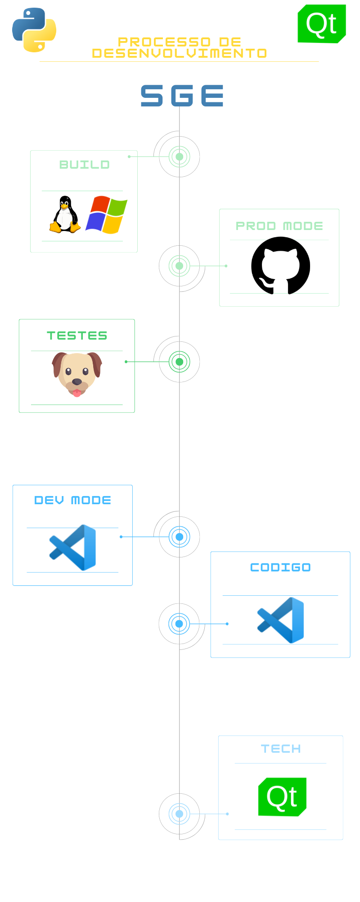

Processo de Desenvolvimento ⚙️🖥️👩💻
O processo de desenvolvimento de software é o conjunto de atividades e etapas necessárias para conceber, criar, testar e manter um software. É um processo iterativo que inclui a definição de requisitos, projeto, codificação, testes, implementação e manutenção. O objetivo é garantir que o software atenda às necessidades dos usuários e seja entregue de forma eficiente e eficaz. Diferentes abordagens de desenvolvimento de software, como ágil, waterfall e DevOps, variam em suas metodologias, mas todas seguem uma estrutura básica para garantir a qualidade do software.O desenvolvimento de software é um processo que envolve várias etapas, desde o planejamento até a entrega e manutenção do software. Aqui estão algumas das principais etapas envolvidas no processo:
Planejamento: Neste estágio, a equipe de desenvolvimento definirá os objetivos do software, o público-alvo e as funcionalidades desejadas.
Análise: Neste estágio, a equipe de desenvolvimento irá investigar mais a fundo as necessidades do usuário e definirá as especificações técnicas do software.
Design: Aqui, a equipe irá projetar a arquitetura do software e decidir como ele será desenvolvido e testado.
Implementação: Neste estágio, a equipe irá codificar e desenvolver o software de acordo com o design.
Testes: Neste estágio, o software é testado para garantir que ele atenda às especificações e funcione corretamente. Isso inclui testes unitários, testes de integração e testes de aceitação.
Build: Neste estágio, o software é compilado e preparado para produção.
Produção: Neste estágio, o software é lançado e entregue ao público-alvo.
Manutenção: Depois que o software é lançado, a equipe de desenvolvimento pode realizar atualizações e correções para mantê-lo funcionando corretamente.
Estes são alguns dos principais passos envolvidos no processo de desenvolvimento de software, embora o processo possa variar de acordo com a equipe de desenvolvimento e o projeto em questão.
O desenvolvimento de software é um processo que envolve várias etapas, desde o planejamento até a entrega e manutenção do software. Aqui estão algumas das principais etapas envolvidas no processo:
Planejamento: Neste estágio, a equipe de desenvolvimento definirá os objetivos do software, o público-alvo e as funcionalidades desejadas.
Análise: Neste estágio, a equipe de desenvolvimento irá investigar mais a fundo as necessidades do usuário e definirá as especificações técnicas do software.
Design: Aqui, a equipe irá projetar a arquitetura do software e decidir como ele será desenvolvido e testado.
Implementação: Neste estágio, a equipe irá codificar e desenvolver o software de acordo com o design.
Testes: Neste estágio, o software é testado para garantir que ele atenda às especificações e funcione corretamente. Isso inclui testes unitários, testes de integração e testes de aceitação.
Build: Neste estágio, o software é compilado e preparado para produção.
Produção: Neste estágio, o software é lançado e entregue ao público-alvo.
Manutenção: Depois que o software é lançado, a equipe de desenvolvimento pode realizar atualizações e correções para mantê-lo funcionando corretamente.
Estes são alguns dos principais passos envolvidos no processo de desenvolvimento de software, embora o processo possa variar de acordo com a equipe de desenvolvimento e o projeto em questão.
Camadas de Abstração
A camada de abstração implementada para comunicação com o banco de dados permite uma execução mais segura e interoperável da nossa aplicação. Como muitas ações em banco de dados são padronizadas como: Criar, Atualizar,Excluir e Ler são repetitivas implementamos uma classe chamada crud_operation responsável por realizar essas ações repetitivas diretamente no banco de dados. o crud_operation atua como um middleware. Middleware é software que atua como intermediário entre aplicações, permitindo a comunicação e compartilhamento de dados entre sistemas diferentes. Ele fornece uma camada adicional de abstração para ajudar a integrar aplicativos, gerenciar requisições de rede e compor aplicativos complexos a partir de componentes mais simples. Middleware é comumente usado em aplicativos empresariais e de Internet das coisas (IoT).

Orquestração do Desenvolvimento
Para manter um desenvolvimento coerente e ligado ao macro criamos nossa Stack de Teste chamada de Aquiles que realiza os testes das três classes principais: Produto, Matriz e Filial bem como também faz uma análise a nível de código verificando se os arquivos seguem a programação orientada a objeto. Além do Aquiles, utilizamos o Pyinstaller para realizar o build nos sistemas operacionais windows gerando um executável da versão beta do nosso programa programa. Para a área desenvolvimento usamos o Visual Studio Code e o GitHub para versionamento. 